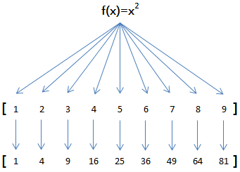
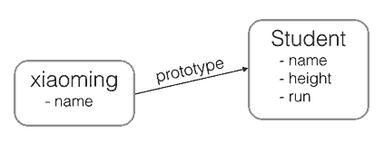
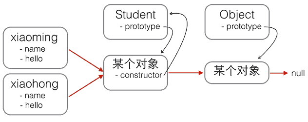

Quick Start Guide JavaScript
关于js、浏览器、node.js之间关系梳理
| JavaScript | java |
|---|---|
| V8 | JVM |
| node.js | JRE |
| browser | Applet |
- JavaScript：脚本语言
- v8：(浏览器内核、node.js内核)相当于java中的JVM(虚拟机字-节码解释器)
- node.js：文件系统I/O、网络（HTTP、TCP、UDP、DNS、TLS/SSL等）、二进制数据流、加密算法、数据流等等
- 浏览器：文档对象模型（DOM）浏览器对象模型（BOM）出于安全考虑，浏览器中的js只能操作DOM BOM对象，功能受限。
基本语法
程序注释
以//开头直到行末的字符被视为行注释，注释是给开发人员看到，JavaScript引擎会自动忽略：
1 | // 这是一行注释 |
另一种块注释是用/*...*/把多行字符包裹起来，把一大”块”视为一个注释：
1 | /* 从这里开始是块注释 |
变量
变量的概念基本上和初中代数的方程变量是一致的，只是在计算机程序中，变量不仅可以是数字，还可以是任意数据类型。
变量在JavaScript中就是用一个变量名表示，变量名是大小写英文、数字、$和_的组合，且不能用数字开头。变量名也不能是JavaScript的关键字，如if、while等。申明一个变量用var语句，比如：
1 | var a; // 申明了变量a，此时a的值为undefined |
变量的类型
Number
JavaScript 只有一种数字类型。数字可以带小数点，也可以不带：1
2
3
4
5
6var x1=123; // 整数123
var x2=0.456; // 浮点数0.456
var x3=1.2345e3; // 科学计数法表示1.2345x1000，等同于1234.5
var x4=-99; // 负数
var x5=NaN; // NaN表示Not a Number，当无法计算结果时用NaN表示
var x6=Infinity; // Infinity表示无限大，当数值超过了JavaScript的Number所能表示的最大值时，就表示为Infinity字符串
字符串是以单引号’或双引号”括起来的任意文本，比如'abc'，"xyz"等等。请注意，''或""本身只是一种表示方式，不是字符串的一部分，因此，字符串'abc'只有a，b，c这3个字符。1
2
3var answer="Nice to meet you!";
var answer="He is called 'Bill'";
var answer='He is called "Bill"';布尔值
布尔（逻辑）只能有两个值：true 或 false。1
2var x=true
var y=false数组
数组是一组按顺序排列的集合，集合的每个值称为元素。JavaScript的数组可以包括任意数据类型。例如：1
[1, 2, 3.14, 'Hello', null, true];
Map
Map是一组键值对的结构，具有极快的查找速度。1
2var m = new Map([['Michael', 95], ['Bob', 75], ['Tracy', 85]]);
m.get('Michael'); // 95初始化Map需要一个二维数组，或者直接初始化一个空Map。Map具有以下方法：
1
2
3
4
5
6
7var m = new Map(); // 空Map
m.set('Adam', 67); // 添加新的key-value
m.set('Bob', 59);
m.has('Adam'); // 是否存在key 'Adam': true
m.get('Adam'); // 67
m.delete('Adam'); // 删除key 'Adam'
m.get('Adam'); // undefined由于一个key只能对应一个value，所以，多次对一个key放入value，后面的值会把前面的值冲掉：
1
2
3
4var m = new Map();
m.set('Adam', 67);
m.set('Adam', 88);
m.get('Adam'); // 88Set
Set和Map类似，也是一组key的集合，但不存储value。由于key不能重复，所以，在Set中，没有重复的key。
要创建一个Set，需要提供一个Array作为输入，或者直接创建一个空Set：1
2var s1 = new Set(); // 空Set
var s2 = new Set([1, 2, 3]); // 含1, 2, 3重复元素在Set中自动被过滤：
1
2var s = new Set([1, 2, 3, 3, '3']);
s; // Set {1, 2, 3, "3"}注意数字3和字符串’3’是不同的元素。
通过add(key)方法可以添加元素到Set中，可以重复添加，但不会有效果：1
2
3
4s.add(4);
s; // Set {1, 2, 3, 4}
s.add(4);
s; // 仍然是 Set {1, 2, 3, 4}通过delete(key)方法可以删除元素：
1
2
3
4var s = new Set([1, 2, 3]);
s; // Set {1, 2, 3}
s.delete(3);
s; // Set {1, 2}对象
JavaScript的对象是一组由键-值组成的无序集合，例如：
1
2
3
4
5
6
7
8var person = {
name: 'Bob',
age: 20,
tags: ['js', 'web', 'mobile'],
city: 'Beijing',
hasCar: true,
zipcode: null
};JavaScript对象的键都是字符串类型，值可以是任意数据类型。上述
person对象一共定义了6个键值对，其中每个键又称为对象的属性，例如，person的name属性为'Bob'，zipcode属性为null。
要获取一个对象的属性，我们用对象变量.属性名的方式：1
2person.name; // 'Bob'
person.zipcode; // nullUndefined 和 Null
null表示一个“空”的值，它和0以及空字符串’’不同，0是一个数值，’’表示长度为0的字符串，而null表示“空”。
在其他语言中，也有类似JavaScript的null的表示，例如Java也用null，Swift用nil，Python用None表示。但是，在JavaScript中，还有一个和null类似的undefined，它表示“未定义”。
JavaScript的设计者希望用null表示一个空的值，而undefined表示值未定义。事实证明，这并没有什么卵用，区分两者的意义不大。大多数情况下，我们都应该用null。undefined仅仅在判断函数参数是否传递的情况下有用。
strict模式
JavaScript在设计之初，为了方便初学者学习，并不强制要求用var申明变量。这个设计错误带来了严重的后果：如果一个变量没有通过var申明就被使用，那么该变量就自动被申明为全局变量：
1
i = 10; // i现在是全局变量
在同一个页面的不同的JavaScript文件中，如果都不用var申明，恰好都使用了变量i，将造成变量i互相影响，产生难以调试的错误结果。
使用var申明的变量则不是全局变量，它的范围被限制在该变量被申明的函数体内（函数的概念将稍后讲解），同名变量在不同的函数体内互不冲突。
为了修补JavaScript这一严重设计缺陷，ECMA在后续规范中推出了strict模式，在strict模式下运行的JavaScript代码，强制通过var申明变量，未使用var申明变量就使用的，将导致运行错误。
启用strict模式的方法是在JavaScript代码的第一行写上:
1
;
这是一个字符串，不支持strict模式的浏览器会把它当做一个字符串语句执行，支持strict模式的浏览器将开启strict模式运行JavaScript。
常量
由于var和let申明的是变量，如果要申明一个常量，在ES6之前是不行的，我们通常用全部大写的变量来表示“这是一个常量，不要修改它的值”：
1 | var PI = 3.14; |
ES6标准引入了新的关键字const来定义常量，const与let都具有块级作用域：
1 | ; |
运算符
运算符 +
javascript中+运算符有2个作用一是数学意义上的加减，另一种则用于字符串的拼接
1
2
3
4
5
6
7
8//数学运算
y=5;
z=2;
x=y+z;
//字符串的拼接
txt1="What a very";
txt2="nice day";
txt3=txt1+" "+txt2;JavaScript 算术运算符
算术运算符用于执行变量与/或值之间的算术运算。
给定 y=5，下面的表格解释了这些算术运算符：
| 运算符 | 描述 | 例子 | 结果 |
|---|---|---|---|
| + | 加 | x=y+2 | x=7 |
| - | 减 | x=y-2 | x=3 |
| * | 乘 | x=y*2 | x=10 |
| / | 除 | x=y/2 | x=2.5 |
| % | 求余数 (保留整数) | x=y%2 | x=y%2 |
| ++ | 累加 | x=++y | x=6 |
| – | 递减 | x=–y | x=4 |
JavaScript 赋值运算符
赋值运算符用于给 JavaScript 变量赋值。
给定 x=10 和 y=5，下面的表格解释了赋值运算符：
| 运算符 | 例子 | 等价于 | 结果 |
|---|---|---|---|
| = | x=y | x=5 | |
| += | x+=y | x=x+y | x=15 |
| -= | x-=y | x=x-y | x=5 |
| *= | x*=y | x=x*y | x=50 |
| /= | x/=y | x=x/y | x=2 |
| %= | x%=y | x=x%y | x=0 |
JavaScript 比较运算符
比较运算符在逻辑语句中使用，以测定变量或值是否相等。
给定 x=5，下面的表格解释了比较运算符：
| 运算符 | 描述 | 例子 | |
|---|---|---|---|
| == | 等于 | x==8 为 false | |
| === | 全等（值和类型） | x===5 为 true；x===”5” 为 false | |
| != | 不等于 | x!=8 为 true | |
| > | 大于 | x>8 为 false | |
| < | 小于 | x<8 为 true | |
| >= | 大于或等于 | x>=8 为 false | |
| <= | 小于或等于 | x<=8 为 true |
JavaScript 逻辑运算符
逻辑运算符用于测定变量或值之间的逻辑。
给定 x=6 以及 y=3，下表解释了逻辑运算符：
| 运算符 | 描述 | 例子 | ||||
|---|---|---|---|---|---|---|
| && | and | (x < 10 && y > 1) 为 true | ||||
| \ | \ | or | (x==5\ | \ | y==5) 为 false | |
| ! | not | !(x==y) 为 true |
javascript 条件运算符
JavaScript 还包含了基于某些条件对变量进行赋值的条件运算符。
1
variablename=(condition)?value1:value2
表达式
流程控制结构
分支结构
if 语句 - 只有当指定条件为 true 时，使用该语句来执行代码
1
2
3
4if (time<20)
{
x="Good day";
}if…else 语句 - 当条件为 true 时执行代码，当条件为 false 时执行其他代码
1
2
3
4
5
6
7
8if (time<20)
{
x="Good day";
}
else
{
x="Good evening";
}if…else if….else 语句 - 使用该语句来选择多个代码块之一来执行
1
2
3
4
5
6
7
8
9
10
11
12if (time<10)
{
x="Good morning";
}
else if (time<20)
{
x="Good day";
}
else
{
x="Good evening";
}switch 语句 - 使用该语句来选择多个代码块之一来执行
1
2
3
4
5
6
7
8
9
10
11
12
13
14
15
16
17
18
19
20
21
22
23
24
25var day=new Date().getDay();
switch (day)
{
case 0:
x="Today it's Sunday";
break;
case 1:
x="Today it's Monday";
break;
case 2:
x="Today it's Tuesday";
break;
case 3:
x="Today it's Wednesday";
break;
case 4:
x="Today it's Thursday";
break;
case 5:
x="Today it's Friday";
break;
case 6:
x="Today it's Saturday";
break;
}default 关键词 - 使用 default 关键词来规定匹配不存在时做的事情
1
2
3
4
5
6
7
8
9
10
11
12var day=new Date().getDay();
switch (day)
{
case 6:
x="Today it's Saturday";
break;
case 0:
x="Today it's Sunday";
break;
default:
x="Looking forward to the Weekend";
}
循环结构
for - 循环代码块一定的次数
1
2
3
4for (var i=0; i<5; i++)
{
x=x + "The number is " + i + "<br>";
}for/in - 循环遍历对象的属性
1
2
3
4
5var person={fname:"John",lname:"Doe",age:25};
for (x in person)
{
txt=txt + person[x];
}for/of 具有iterable类型的集合可以通过新的for/of循环来遍历。
1
2
3
4
5
6
7
8
9
10
11
12var a = ['A', 'B', 'C'];
var s = new Set(['A', 'B', 'C']);
var m = new Map([[1, 'x'], [2, 'y'], [3, 'z']]);
for (var x of a) { // 遍历Array
console.log(x);
}
for (var x of s) { // 遍历Set
console.log(x);
}
for (var x of m) { // 遍历Map
console.log(x[0] + '=' + x[1]);
}forEach() 它接收一个函数，每次迭代就自动回调该函数
1
2
3
4
5
6
7
8;
var a = ['A', 'B', 'C'];
a.forEach(function (element, index, array) {
// element: 指向当前元素的值
// index: 指向当前索引
// array: 指向Array对象本身
console.log(element + ', index = ' + index);
});while - 当指定的条件为 true 时循环指定的代码块
1
2
3
4
5while (i<5)
{
x=x + "The number is " + i + "<br>";
i++;
}do/while - 同样当指定的条件为 true 时循环指定的代码块
1
2
3
4
5
6do
{
x=x + "The number is " + i + "<br>";
i++;
}
while (i<5);
特殊的流程控制语句
Break 语句
我们已经switch中见到过 break 语句。它用于跳出 switch() 语句。
break 语句可用于跳出循环。
break 语句跳出循环后，会继续执行该循环之后的代码（如果有的话）：1
2
3
4
5
6
7
8for (i=0;i<10;i++)
{
if (i==3)
{
break;
}
x=x + "The number is " + i + "<br>";
}Continue 语句
continue 语句中断循环中的迭代，如果出现了指定的条件，然后继续循环中的下一个迭代。
该例子跳过了值 3：1
2
3
4
5for (i=0;i<=10;i++)
{
if (i==3) continue;
x=x + "The number is " + i + "<br>";
}
函数
借助抽象，我们才能不关心底层的具体计算过程，而直接在更高的层次上思考问题。
写计算机程序也是一样，函数就是最基本的一种代码抽象的方式。
函数的定义与调用
定义
1
2
3
4
5
6
7
8
9
10function abs(x) {
if (typeof x !== 'number') {
throw 'Not a number';
}
if (x >= 0) {
return x;
} else {
return -x;
}
}JavaScript的函数也是一个对象，上述定义的
abs()函数实际上是一个函数对象，而函数名abs可以视为指向该函数的变量。1
2
3
4
5
6
7
8
9
10var abs = function (x) {
if (typeof x !== 'number') {
throw 'Not a number';
}
if (x >= 0) {
return x;
} else {
return -x;
}
};调用
1
2abs(10); // 返回10
abs(-9); // 返回9arguments
JavaScript还有一个免费赠送的关键字arguments，它只在函数内部起作用，并且永远指向当前函数的调用者传入的所有参数。arguments类似Array但它不是一个Array：
利用arguments，你可以获得调用者传入的所有参数。也就是说，即使函数不定义任何参数，还是可以拿到参数的值：1
2
3
4
5
6
7
8
9
10
11function abs() {
if (arguments.length === 0) {
return 0;
}
var x = arguments[0];
return x >= 0 ? x : -x;
}
abs(); // 0
abs(10); // 10
abs(-9); // 9rest参数
由于JavaScript函数允许接收任意个参数，于是我们就不得不用arguments来获取所有参数：1
2
3
4
5
6
7
8
9
10
11function foo(a, b) {
var i, rest = [];
if (arguments.length > 2) {
for (i = 2; i<arguments.length; i++) {
rest.push(arguments[i]);
}
}
console.log('a = ' + a);
console.log('b = ' + b);
console.log(rest);
}为了获取除了已定义参数a、b之外的参数，我们不得不用arguments，并且循环要从索引2开始以便排除前两个参数，这种写法很别扭，只是为了获得额外的rest参数，有没有更好的方法？
ES6标准引入了rest参数，上面的函数可以改写为：
1
2
3
4
5
6
7
8
9
10
11
12
13
14
15
16
17function foo(a, b, ...rest) {
console.log('a = ' + a);
console.log('b = ' + b);
console.log(rest);
}
foo(1, 2, 3, 4, 5);
// 结果:
// a = 1
// b = 2
// Array [ 3, 4, 5 ]
foo(1);
// 结果:
// a = 1
// b = undefined
// Array []rest参数只能写在最后，前面用…标识，从运行结果可知，传入的参数先绑定a、b，多余的参数以数组形式交给变量rest，所以，不再需要arguments我们就获取了全部参数。
如果传入的参数连正常定义的参数都没填满，也不要紧，rest参数会接收一个空数组（注意不是undefined）。
变量作用域与解构赋值
在JavaScript中，用var申明的变量实际上是有作用域的。
如果一个变量在函数体内部申明，则该变量的作用域为整个函数体，在函数体外不可引用该变量：
局部 JavaScript 变量
1
2
3
4
5
6
7
8;
function foo() {
var x = 1;
x = x + 1;
}
x = x + 2; // ReferenceError! 无法在函数体外引用变量x变量提升
JavaScript的函数定义有个特点，它会先扫描整个函数体的语句，把所有申明的变量“提升”到函数顶部：
1
2
3
4
5
6
7
8
9;
function foo() {
var x = 'Hello, ' + y;
console.log(x);
var y = 'Bob';
}
foo();虽然是strict模式，但语句var x = ‘Hello, ‘ + y;并不报错，原因是变量y在稍后申明了。但是console.log显示Hello, undefined，说明变量y的值为undefined。这正是因为JavaScript引擎自动提升了变量y的声明，但不会提升变量y的赋值。
对于上述foo()函数，JavaScript引擎看到的代码相当于：
1
2
3
4
5
6function foo() {
var y; // 提升变量y的申明，此时y为undefined
var x = 'Hello, ' + y;
console.log(x);
y = 'Bob';
}由于JavaScript的这一怪异的“特性”，我们在函数内部定义变量时，请严格遵守“在函数内部首先申明所有变量”这一规则。最常见的做法是用一个var申明函数内部用到的所有变量：
1
2
3
4
5
6
7
8
9
10function foo() {
var
x = 1, // x初始化为1
y = x + 1, // y初始化为2
z, i; // z和i为undefined
// 其他语句:
for (i=0; i<100; i++) {
...
}
}全局 JavaScript 变量
不在任何函数内定义的变量就具有全局作用域。实际上，JavaScript默认有一个全局对象window，全局作用域的变量实际上被绑定到window的一个属性：1
2
3
4
5;
var course = 'Learn JavaScript';
alert(course); // 'Learn JavaScript'
alert(window.course); // 'Learn JavaScript'因此，直接访问全局变量course和访问window.course是完全一样的。
你可能猜到了，由于函数定义有两种方式，以变量方式var foo = function () {}定义的函数实际上也是一个全局变量，因此，顶层函数的定义也被视为一个全局变量，并绑定到window对象：
1
2
3
4
5
6
7
8;
function foo() {
alert('foo');
}
foo(); // 直接调用foo()
window.foo(); // 通过window.foo()调用进一步大胆地猜测，我们每次直接调用的alert()函数其实也是window的一个变量：
1
2
3
4
5
6
7
8
9
10;
window.alert('调用window.alert()');
// 把alert保存到另一个变量:
var old_alert = window.alert;
// 给alert赋一个新函数:
window.alert = function () {}
alert('无法用alert()显示了!');
// 恢复alert:
window.alert = old_alert;
alert('又可以用alert()了!');这说明JavaScript实际上只有一个全局作用域。任何变量（函数也视为变量），如果没有在当前函数作用域中找到，就会继续往上查找，最后如果在全局作用域中也没有找到，则报ReferenceError错误。
名字空间
全局变量会绑定到window上，不同的JavaScript文件如果使用了相同的全局变量，或者定义了相同名字的顶层函数，都会造成命名冲突，并且很难被发现。减少冲突的一个方法是把自己的所有变量和函数全部绑定到一个全局变量中。例如：
1
2
3
4
5
6
7
8
9
10
11// 唯一的全局变量MYAPP:
var MYAPP = {};
// 其他变量:
MYAPP.name = 'myapp';
MYAPP.version = 1.0;
// 其他函数:
MYAPP.foo = function () {
return 'foo';
};把自己的代码全部放入唯一的名字空间MYAPP中，会大大减少全局变量冲突的可能。
许多著名的JavaScript库都是这么干的：jQuery，YUI，underscore等等。
局部作用域
由于JavaScript的变量作用域实际上是函数内部，我们在for循环等语句块中是无法定义具有局部作用域的变量的：
1
2
3
4
5
6
7
8;
function foo() {
for (var i=0; i<100; i++) {
//
}
i += 100; // 仍然可以引用变量i
}为了解决块级作用域，ES6引入了新的关键字let，用let替代var可以申明一个块级作用域的变量：
1
2
3
4
5
6
7
8
9
10;
function foo() {
var sum = 0;
for (let i=0; i<100; i++) {
sum += i;
}
// SyntaxError:
i += 1;
}解构赋值
从ES6开始，JavaScript引入了解构赋值，可以同时对一组变量进行赋值。
什么是解构赋值？我们先看看传统的做法，如何把一个数组的元素分别赋值给几个变量：
1
2
3
4var array = ['hello', 'JavaScript', 'ES6'];
var x = array[0];
var y = array[1];
var z = array[2];现在，在ES6中，可以使用解构赋值，直接对多个变量同时赋值：
1
2
3
4;
// 如果浏览器支持解构赋值就不会报错:
var [x, y, z] = ['hello', 'JavaScript', 'ES6'];注意，对数组元素进行解构赋值时，多个变量要用[…]括起来。
如果数组本身还有嵌套，也可以通过下面的形式进行解构赋值，注意嵌套层次和位置要保持一致：
1
2
3
4let [x, [y, z]] = ['hello', ['JavaScript', 'ES6']];
x; // 'hello'
y; // 'JavaScript'
z; // 'ES6'解构赋值还可以忽略某些元素：
1
2let [, , z] = ['hello', 'JavaScript', 'ES6']; // 忽略前两个元素，只对z赋值第三个元素
z; // 'ES6'如果需要从一个对象中取出若干属性，也可以使用解构赋值，便于快速获取对象的指定属性：
1
2
3
4
5
6
7
8
9
10;
var person = {
name: '小明',
age: 20,
gender: 'male',
passport: 'G-12345678',
school: 'No.4 middle school'
};
var {name, age, passport} = person;对一个对象进行解构赋值时，同样可以直接对嵌套的对象属性进行赋值，只要保证对应的层次是一致的：
1
2
3
4
5
6
7
8
9
10
11
12
13
14
15
16
17
18var person = {
name: '小明',
age: 20,
gender: 'male',
passport: 'G-12345678',
school: 'No.4 middle school',
address: {
city: 'Beijing',
street: 'No.1 Road',
zipcode: '100001'
}
};
var {name, address: {city, zip}} = person;
name; // '小明'
city; // 'Beijing'
zip; // undefined, 因为属性名是zipcode而不是zip
// 注意: address不是变量，而是为了让city和zip获得嵌套的address对象的属性:
address; // Uncaught ReferenceError: address is not defined使用解构赋值对对象属性进行赋值时，如果对应的属性不存在，变量将被赋值为undefined，这和引用一个不存在的属性获得undefined是一致的。如果要使用的变量名和属性名不一致，可以用下面的语法获取：
1
2
3
4
5
6
7
8
9
10
11
12
13
14var person = {
name: '小明',
age: 20,
gender: 'male',
passport: 'G-12345678',
school: 'No.4 middle school'
};
// 把passport属性赋值给变量id:
let {name, passport:id} = person;
name; // '小明'
id; // 'G-12345678'
// 注意: passport不是变量，而是为了让变量id获得passport属性:
passport; // Uncaught ReferenceError: passport is not defined解构赋值还可以使用默认值，这样就避免了不存在的属性返回undefined的问题：
1
2
3
4
5
6
7
8
9
10
11var person = {
name: '小明',
age: 20,
gender: 'male',
passport: 'G-12345678'
};
// 如果person对象没有single属性，默认赋值为true:
var {name, single=true} = person;
name; // '小明'
single; // true有些时候，如果变量已经被声明了，再次赋值的时候，正确的写法也会报语法错误：
1
2
3
4
5// 声明变量:
var x, y;
// 解构赋值:
{x, y} = { name: '小明', x: 100, y: 200};
// 语法错误: Uncaught SyntaxError: Unexpected token =这是因为JavaScript引擎把{开头的语句当作了块处理，于是=不再合法。解决方法是用小括号括起来：
1
({x, y} = { name: '小明', x: 100, y: 200});
方法
在一个对象中绑定函数，称为这个对象的方法。
在JavaScript中，对象的定义是这样的：
1 | var xiaoming = { |
但是，如果我们给xiaoming绑定一个函数，就可以做更多的事情。比如，写个age()方法，返回xiaoming的年龄：
1 | var xiaoming = { |
绑定到对象上的函数称为方法，和普通函数也没啥区别，但是它在内部使用了一个this关键字，这个东东是什么？
在一个方法内部，this是一个特殊变量，它始终指向当前对象，也就是xiaoming这个变量。所以，this.birth可以拿到xiaoming的birth属性。
让我们拆开写：
1 | function getAge() { |
单独调用函数getAge()怎么返回了NaN？请注意，我们已经进入到了JavaScript的一个大坑里。
JavaScript的函数内部如果调用了this，那么这个this到底指向谁？
答案是，视情况而定！
如果以对象的方法形式调用，比如xiaoming.age()，该函数的this指向被调用的对象，也就是xiaoming，这是符合我们预期的。
如果单独调用函数，比如getAge()，此时，该函数的this指向全局对象，也就是window。
坑爹啊！
更坑爹的是，如果这么写：
1 | var fn = xiaoming.age; // 先拿到xiaoming的age函数 |
也是不行的！要保证this指向正确，必须用obj.xxx()的形式调用！
由于这是一个巨大的设计错误，要想纠正可没那么简单。ECMA决定，在strict模式下让函数的this指向undefined，因此，在strict模式下，你会得到一个错误：
1 | ; |
这个决定只是让错误及时暴露出来，并没有解决this应该指向的正确位置。
有些时候，喜欢重构的你把方法重构了一下：
1 | ; |
结果又报错了！原因是this指针只在age方法的函数内指向xiaoming，在函数内部定义的函数，this又指向undefined了！（在非strict模式下，它重新指向全局对象window！）
修复的办法也不是没有，我们用一个that变量首先捕获this：
1 | ; |
用var that = this;，你就可以放心地在方法内部定义其他函数，而不是把所有语句都堆到一个方法中。
- apply
虽然在一个独立的函数调用中，根据是否是strict模式，this指向undefined或window，不过，我们还是可以控制this的指向的！
要指定函数的this指向哪个对象，可以用函数本身的apply方法，它接收两个参数，第一个参数就是需要绑定的this变量，第二个参数是Array，表示函数本身的参数。
用apply修复getAge()调用：
1 | function getAge() { |
另一个与apply()类似的方法是call()，唯一区别是：
apply()把参数打包成Array再传入；
call()把参数按顺序传入。
比如调用Math.max(3, 5, 4)，分别用apply()和call()实现如下：
1 | Math.max.apply(null, [3, 5, 4]); // 5 |
对普通函数调用，我们通常把this绑定为null。
- 装饰器
利用apply()，我们还可以动态改变函数的行为。
JavaScript的所有对象都是动态的，即使内置的函数，我们也可以重新指向新的函数。
现在假定我们想统计一下代码一共调用了多少次parseInt()，可以把所有的调用都找出来，然后手动加上count += 1，不过这样做太傻了。最佳方案是用我们自己的函数替换掉默认的parseInt()：
1 | ; |
高阶函数
高阶函数英文叫Higher-order function。那么什么是高阶函数？
JavaScript的函数其实都指向某个变量。既然变量可以指向函数，函数的参数能接收变量，那么一个函数就可以接收另一个函数作为参数，这种函数就称之为高阶函数。
一个最简单的高阶函数：
1 | function add(x, y, f) { |
当我们调用add(-5, 6, Math.abs)时，参数x，y和f分别接收-5，6和函数Math.abs，根据函数定义，我们可以推导计算过程为：
1 | x = -5; |
编写高阶函数，就是让函数的参数能够接收别的函数。
map/reduce
如果你读过Google的那篇大名鼎鼎的论文“MapReduce: Simplified Data Processing on Large Clusters”，你就能大概明白map/reduce的概念。
map
举例说明，比如我们有一个函数f(x)=x2，要把这个函数作用在一个数组[1, 2, 3, 4, 5, 6, 7, 8, 9]上，就可以用map实现如下：
由于map()方法定义在JavaScript的Array中，我们调用Array的map()方法，传入我们自己的函数，就得到了一个新的Array作为结果：1
2
3
4
5
6
7
8
9;
function pow(x) {
return x * x;
}
var arr = [1, 2, 3, 4, 5, 6, 7, 8, 9];
var results = arr.map(pow); // [1, 4, 9, 16, 25, 36, 49, 64, 81]
console.log(results);注意：map()传入的参数是pow，即函数对象本身。
你可能会想，不需要map()，写一个循环，也可以计算出结果：
1
2
3
4
5
6
7
8
9var f = function (x) {
return x * x;
};
var arr = [1, 2, 3, 4, 5, 6, 7, 8, 9];
var result = [];
for (var i=0; i<arr.length; i++) {
result.push(f(arr[i]));
}的确可以，但是，从上面的循环代码，我们无法一眼看明白“把f(x)作用在Array的每一个元素并把结果生成一个新的Array”。
所以，map()作为高阶函数，事实上它把运算规则抽象了，因此，我们不但可以计算简单的f(x)=x2，还可以计算任意复杂的函数，比如，把Array的所有数字转为字符串：
1
2var arr = [1, 2, 3, 4, 5, 6, 7, 8, 9];
arr.map(String); // ['1', '2', '3', '4', '5', '6', '7', '8', '9']只需要一行代码。
reduce
再看reduce的用法。Array的reduce()把一个函数作用在这个Array的[x1, x2, x3…]上，这个函数必须接收两个参数，reduce()把结果继续和序列的下一个元素做累积计算，其效果就是：1
[x1, x2, x3, x4].reduce(f) = f(f(f(x1, x2), x3), x4)
比方说对一个Array求和，就可以用reduce实现：
1
2
3
4var arr = [1, 3, 5, 7, 9];
arr.reduce(function (x, y) {
return x + y;
}); // 25filter
filter也是一个常用的操作，它用于把Array的某些元素过滤掉，然后返回剩下的元素。和map()类似，Array的filter()也接收一个函数。和map()不同的是，filter()把传入的函数依次作用于每个元素，然后根据返回值是true还是false决定保留还是丢弃该元素。
例如，在一个Array中，删掉偶数，只保留奇数，可以这么写：
1
2
3
4
5var arr = [1, 2, 4, 5, 6, 9, 10, 15];
var r = arr.filter(function (x) {
return x % 2 !== 0;
});
r; // [1, 5, 9, 15]把一个Array中的空字符串删掉，可以这么写：
1
2
3
4
5var arr = ['A', '', 'B', null, undefined, 'C', ' '];
var r = arr.filter(function (s) {
return s && s.trim(); // 注意：IE9以下的版本没有trim()方法
});
r; // ['A', 'B', 'C']可见用filter()这个高阶函数，关键在于正确实现一个“筛选”函数。
回调函数
filter()接收的回调函数，其实可以有多个参数。通常我们仅使用第一个参数，表示Array的某个元素。回调函数还可以接收另外两个参数，表示元素的位置和数组本身：1
2
3
4
5
6
7var arr = ['A', 'B', 'C'];
var r = arr.filter(function (element, index, self) {
console.log(element); // 依次打印'A', 'B', 'C'
console.log(index); // 依次打印0, 1, 2
console.log(self); // self就是变量arr
return true;
});sort
排序算法
排序也是在程序中经常用到的算法。无论使用冒泡排序还是快速排序，排序的核心是比较两个元素的大小。如果是数字，我们可以直接比较，但如果是字符串或者两个对象呢？直接比较数学上的大小是没有意义的，因此，比较的过程必须通过函数抽象出来。通常规定，对于两个元素x和y，如果认为x < y，则返回-1，如果认为x == y，则返回0，如果认为x > y，则返回1，这样，排序算法就不用关心具体的比较过程，而是根据比较结果直接排序。
JavaScript的Array的sort()方法就是用于排序的，但是排序结果可能让你大吃一惊：1
2
3
4
5
6
7
8// 看上去正常的结果:
['Google', 'Apple', 'Microsoft'].sort(); // ['Apple', 'Google', 'Microsoft'];
// apple排在了最后:
['Google', 'apple', 'Microsoft'].sort(); // ['Google', 'Microsoft", 'apple']
// 无法理解的结果:
[10, 20, 1, 2].sort(); // [1, 10, 2, 20]第二个排序把apple排在了最后，是因为字符串根据ASCII码进行排序，而小写字母a的ASCII码在大写字母之后。
第三个排序结果是什么鬼？简单的数字排序都能错？
这是因为Array的sort()方法默认把所有元素先转换为String再排序，结果’10’排在了’2’的前面，因为字符’1’比字符’2’的ASCII码小。
如果不知道sort()方法的默认排序规则，直接对数字排序，绝对栽进坑里！
幸运的是，sort()方法也是一个高阶函数，它还可以接收一个比较函数来实现自定义的排序。
要按数字大小排序，我们可以这么写：
1
2
3
4
5
6
7
8
9
10
11
12
13;
var arr = [10, 20, 1, 2];
arr.sort(function (x, y) {
if (x < y) {
return -1;
}
if (x > y) {
return 1;
}
return 0;
});
console.log(arr); // [1, 2, 10, 20]如果要倒序排序，我们可以把大的数放前面：
1
2
3
4
5
6
7
8
9
10var arr = [10, 20, 1, 2];
arr.sort(function (x, y) {
if (x < y) {
return 1;
}
if (x > y) {
return -1;
}
return 0;
}); // [20, 10, 2, 1]默认情况下，对字符串排序，是按照ASCII的大小比较的，现在，我们提出排序应该忽略大小写，按照字母序排序。要实现这个算法，不必对现有代码大加改动，只要我们能定义出忽略大小写的比较算法就可以：
1
2
3
4
5
6
7
8
9
10
11
12var arr = ['Google', 'apple', 'Microsoft'];
arr.sort(function (s1, s2) {
x1 = s1.toUpperCase();
x2 = s2.toUpperCase();
if (x1 < x2) {
return -1;
}
if (x1 > x2) {
return 1;
}
return 0;
}); // ['apple', 'Google', 'Microsoft']忽略大小写来比较两个字符串，实际上就是先把字符串都变成大写（或者都变成小写），再比较。
从上述例子可以看出，高阶函数的抽象能力是非常强大的，而且，核心代码可以保持得非常简洁。
最后友情提示，sort()方法会直接对Array进行修改，它返回的结果仍是当前Array：
1
2
3
4
5var a1 = ['B', 'A', 'C'];
var a2 = a1.sort();
a1; // ['A', 'B', 'C']
a2; // ['A', 'B', 'C']
a1 === a2; // true, a1和a2是同一对象
闭包
函数作为返回值
高阶函数除了可以接受函数作为参数外，还可以把函数作为结果值返回。
我们来实现一个对Array的求和。通常情况下，求和的函数是这样定义的：
1 | function sum(arr) { |
但是，如果不需要立刻求和，而是在后面的代码中，根据需要再计算怎么办？可以不返回求和的结果，而是返回求和的函数！
1 | function lazy_sum(arr) { |
当我们调用lazy_sum()时，返回的并不是求和结果，而是求和函数：
1 | var f = lazy_sum([1, 2, 3, 4, 5]); // function sum() |
调用函数f时，才真正计算求和的结果：
1 | f(); // 15 |
在这个例子中，我们在函数lazy_sum中又定义了函数sum，并且，内部函数sum可以引用外部函数lazy_sum的参数和局部变量，当lazy_sum返回函数sum时，相关参数和变量都保存在返回的函数中，这种称为“闭包（Closure）”的程序结构拥有极大的威力。
请再注意一点，当我们调用lazy_sum()时，每次调用都会返回一个新的函数，即使传入相同的参数：
1 | var f1 = lazy_sum([1, 2, 3, 4, 5]); |
f1()和f2()的调用结果互不影响。
闭包
注意到返回的函数在其定义内部引用了局部变量arr，所以，当一个函数返回了一个函数后，其内部的局部变量还被新函数引用，所以，闭包用起来简单，实现起来可不容易。
另一个需要注意的问题是，返回的函数并没有立刻执行，而是直到调用了f()才执行。我们来看一个例子：
1 | function count() { |
在上面的例子中，每次循环，都创建了一个新的函数，然后，把创建的3个函数都添加到一个Array中返回了。
你可能认为调用f1()，f2()和f3()结果应该是1，4，9，但实际结果是：
1 | f1(); // 16 |
全部都是16！原因就在于返回的函数引用了变量i，但它并非立刻执行。等到3个函数都返回时，它们所引用的变量i已经变成了4，因此最终结果为16。
返回闭包时牢记的一点就是：返回函数不要引用任何循环变量，或者后续会发生变化的变量。
如果一定要引用循环变量怎么办？方法是再创建一个函数，用该函数的参数绑定循环变量当前的值，无论该循环变量后续如何更改，已绑定到函数参数的值不变：
1 | function count() { |
注意这里用了一个“创建一个匿名函数并立刻执行”的语法：
1 | (function (x) { |
理论上讲，创建一个匿名函数并立刻执行可以这么写：
1 | function (x) { return x * x } (3); |
但是由于JavaScript语法解析的问题，会报SyntaxError错误，因此需要用括号把整个函数定义括起来：
1 | (function (x) { return x * x }) (3); |
通常，一个立即执行的匿名函数可以把函数体拆开，一般这么写：
1 | (function (x) { |
说了这么多，难道闭包就是为了返回一个函数然后延迟执行吗？
当然不是！闭包有非常强大的功能。举个栗子：
在面向对象的程序设计语言里，比如Java和C++，要在对象内部封装一个私有变量，可以用private修饰一个成员变量。
在没有class机制，只有函数的语言里，借助闭包，同样可以封装一个私有变量。我们用JavaScript创建一个计数器：
1 | ; |
它用起来像这样：
1 | var c1 = create_counter(); |
在返回的对象中，实现了一个闭包，该闭包携带了局部变量x，并且，从外部代码根本无法访问到变量x。换句话说，闭包就是携带状态的函数，并且它的状态可以完全对外隐藏起来。
闭包还可以把多参数的函数变成单参数的函数。例如，要计算xy可以用Math.pow(x, y)函数，不过考虑到经常计算x2或x3，我们可以利用闭包创建新的函数pow2和pow3：
1 | ; |
脑洞大开
很久很久以前，有个叫阿隆佐·邱奇的帅哥，发现只需要用函数，就可以用计算机实现运算，而不需要0、1、2、3这些数字和+、-、*、/这些符号。
JavaScript支持函数，所以可以用JavaScript用函数来写这些计算。来试试：
1 | ; |
箭头函数
ES6标准新增了一种新的函数：Arrow Function（箭头函数）。
为什么叫Arrow Function？因为它的定义用的就是一个箭头：
1 | x => x * x |
上面的箭头函数相当于：
1 | function (x) { |
箭头函数相当于匿名函数，并且简化了函数定义。箭头函数有两种格式，一种像上面的，只包含一个表达式，连{ … }和return都省略掉了。还有一种可以包含多条语句，这时候就不能省略{ … }和return：
1 | x => { |
如果参数不是一个，就需要用括号()括起来：
1 | // 两个参数: |
如果要返回一个对象，就要注意，如果是单表达式，这么写的话会报错：
1 | // SyntaxError: |
因为和函数体的{ … }有语法冲突，所以要改为：
1 | // ok: |
this
箭头函数看上去是匿名函数的一种简写，但实际上，箭头函数和匿名函数有个明显的区别：箭头函数内部的this是词法作用域，由上下文确定。
回顾前面的例子，由于JavaScript函数对this绑定的错误处理，下面的例子无法得到预期结果：
1 | var obj = { |
现在，箭头函数完全修复了this的指向，this总是指向词法作用域，也就是外层调用者obj：
1 | var obj = { |
如果使用箭头函数，以前的那种hack写法：
1 | var that = this; |
就不再需要了。
由于this在箭头函数中已经按照词法作用域绑定了，所以，用call()或者apply()调用箭头函数时，无法对this进行绑定，即传入的第一个参数被忽略：
1 | var obj = { |
generator
generator（生成器）是ES6标准引入的新的数据类型。一个generator看上去像一个函数，但可以返回多次。
ES6定义generator标准的哥们借鉴了Python的generator的概念和语法，如果你对Python的generator很熟悉，那么ES6的generator就是小菜一碟了。如果你对Python还不熟，赶快恶补Python教程！。
我们先复习函数的概念。一个函数是一段完整的代码，调用一个函数就是传入参数，然后返回结果：
1 | function foo(x) { |
函数在执行过程中，如果没有遇到return语句（函数末尾如果没有return，就是隐含的return undefined;），控制权无法交回被调用的代码。
generator跟函数很像，定义如下：
1 | function* foo(x) { |
generator和函数不同的是，generator由function_定义（注意多出的_号），并且，除了return语句，还可以用yield返回多次。
大多数同学立刻就晕了，generator就是能够返回多次的“函数”？返回多次有啥用？
还是举个栗子吧。
我们以一个著名的斐波那契数列为例，它由0，1开头：
1 | 0 1 1 2 3 5 8 13 21 34 ... |
要编写一个产生斐波那契数列的函数，可以这么写：
1 | function fib(max) { |
函数只能返回一次，所以必须返回一个Array。但是，如果换成generator，就可以一次返回一个数，不断返回多次。用generator改写如下：
1 | function* fib(max) { |
直接调用试试：
1 | fib(5); // fib {[[GeneratorStatus]]: "suspended", [[GeneratorReceiver]]: Window} |
直接调用一个generator和调用函数不一样，fib(5)仅仅是创建了一个generator对象，还没有去执行它。
调用generator对象有两个方法，一是不断地调用generator对象的next()方法：
1 | var f = fib(5); |
next()方法会执行generator的代码，然后，每次遇到yield x;就返回一个对象{value: x, done: true/false}，然后“暂停”。返回的value就是yield的返回值，done表示这个generator是否已经执行结束了。如果done为true，则value就是return的返回值。
当执行到done为true时，这个generator对象就已经全部执行完毕，不要再继续调用next()了。
第二个方法是直接用for … of循环迭代generator对象，这种方式不需要我们自己判断done：
1 |
|
generator和普通函数相比，有什么用？
因为generator可以在执行过程中多次返回，所以它看上去就像一个可以记住执行状态的函数，利用这一点，写一个generator就可以实现需要用面向对象才能实现的功能。例如，用一个对象来保存状态，得这么写：
1 | var fib = { |
用对象的属性来保存状态，相当繁琐。
generator还有另一个巨大的好处，就是把异步回调代码变成“同步”代码。这个好处要等到后面学了AJAX以后才能体会到。
没有generator之前的黑暗时代，用AJAX时需要这么写代码：
1 | ajax('http://url-1', data1, function (err, result) { |
回调越多，代码越难看。
有了generator的美好时代，用AJAX时可以这么写：
1 | try { |
看上去是同步的代码，实际执行是异步的。
面向对象的程序设计
JavaScript的所有数据都可以看成对象，那是不是我们已经在使用面向对象编程了呢？
当然不是。如果我们只使用Number、Array、string以及基本的{…}定义的对象，还无法发挥出面向对象编程的威力。
JavaScript的面向对象编程和大多数其他语言如Java、C#的面向对象编程都不太一样。如果你熟悉Java或C#，很好，你一定明白面向对象的两个基本概念：
1.类：类是对象的类型模板，例如，定义Student类来表示学生，类本身是一种类型，Student表示学生类型，但不表示任何具体的某个学生；
2.实例：实例是根据类创建的对象，例如，根据Student类可以创建出xiaoming、xiaohong、xiaojun等多个实例，每个实例表示一–个具体的学生，他们全都属于Student类型。
所以，类和实例是大多数面向对象编程语言的基本概念。
不过，在JavaScript中，这个概念需要改一改。JavaScript不区分类和实例的概念，而是通过原型（prototype）来实现面向对象编程。
原型是指当我们想要创建xiaoming这个具体的学生时，我们并没有一个Student类型可用。那怎么办？恰好有这么一个现成的对象：
1 | var robot = { |
我们看这个robot对象有名字，有身高，还会跑，有点像小明，干脆就根据它来“创建”小明得了！
于是我们把它改名为Student，然后创建出xiaoming：
1 | var Student = { |
注意最后一行代码把xiaoming的原型指向了对象Student，看上去xiaoming仿佛是从Student继承下来的：
1 | xiaoming.name; // '小明' |
xiaoming有自己的name属性，但并没有定义run()方法。不过，由于小明是从Student继承而来，只要Student有run()方法，xiaoming也可以调用：

JavaScript的原型链和Java的Class区别就在，它没有“Class”的概念，所有对象都是实例，所谓继承关系不过是把一个对象的原型指向另一个对象而已。
如果你把xiaoming的原型指向其他对象：
1 | var Bird = { |
现在xiaoming已经无法run()了，他已经变成了一只鸟：
1 | xiaoming.fly(); // 小明 is flying... |
在JavaScrip代码运行时期，你可以把xiaoming从Student变成Bird，或者变成任何对象。
请注意，上述代码仅用于演示目的。在编写JavaScript代码时，不要直接用obj.proto去改变一个对象的原型，并且，低版本的IE也无法使用proto。Object.create()方法可以传入一个原型对象，并创建一个基于该原型的新对象，但是新对象什么属性都没有，因此，我们可以编写一个函数来创建xiaoming：
1 | // 原型对象: |
这是创建原型继承的一种方法，JavaScript还有其他方法来创建对象，我们在后面会一一讲到。
创建对象
JavaScript对每个创建的对象都会设置一个原型，指向它的原型对象。
当我们用obj.xxx访问一个对象的属性时，JavaScript引擎先在当前对象上查找该属性，如果没有找到，就到其原型对象上找，如果还没有找到，就一直上溯到Object.prototype对象，最后，如果还没有找到，就只能返回undefined。
例如，创建一个Array对象：
1 | var arr = [1, 2, 3]; |
其原型链是：
1 | arr ----> Array.prototype ----> Object.prototype ----> null |
当我们创建一个函数时：
1 | function foo() { |
函数也是一个对象，它的原型链是：
1 | foo ----> Function.prototype ----> Object.prototype ----> null |
由于Function.prototype定义了apply()等方法，因此，所有函数都可以调用apply()方法。
很容易想到，如果原型链很长，那么访问一个对象的属性就会因为花更多的时间查找而变得更慢，因此要注意不要把原型链搞得太长。
构造函数
除了直接用{ … }创建一个对象外，JavaScript还可以用一种构造函数的方法来创建对象。它的用法是，先定义一个构造函数：
1 | function Student(name) { |
你会问，咦，这不是一个普通函数吗？
这确实是一个普通函数，但是在JavaScript中，可以用关键字new来调用这个函数，并返回一个对象：
1 | var xiaoming = new Student('小明'); |
注意，如果不写new，这就是一个普通函数，它返回undefined。但是，如果写了new，它就变成了一个构造函数，它绑定的this指向新创建的对象，并默认返回this，也就是说，不需要在最后写return this;。
新创建的xiaoming的原型链是：
1 | xiaoming ----> Student.prototype ----> Object.prototype ----> null |
也就是说，xiaoming的原型指向函数Student的原型。如果你又创建了xiaohong、xiaojun，那么这些对象的原型与xiaoming是一样的：
1 | xiaoming ↘ |
用new Student()创建的对象还从原型上获得了一个constructor属性，它指向函数Student本身：
1 | xiaoming.constructor === Student.prototype.constructor; // true |
看晕了吧？用一张图来表示这些乱七八糟的关系就是：

红色箭头是原型链。注意，Student.prototype指向的对象就是xiaoming、xiaohong的原型对象，这个原型对象自己还有个属性constructor，指向Student函数本身。
另外，函数Student恰好有个属性prototype指向xiaoming、xiaohong的原型对象，但是xiaoming、xiaohong这些对象可没有prototype这个属性，不过可以用proto这个非标准用法来查看。
现在我们就认为xiaoming、xiaohong这些对象“继承”自Student。
不过还有一个小问题，注意观察：
1 | xiaoming.name; // '小明' |
xiaoming和xiaohong各自的name不同，这是对的，否则我们无法区分谁是谁了。
xiaoming和xiaohong各自的hello是一个函数，但它们是两个不同的函数，虽然函数名称和代码都是相同的！
如果我们通过new Student()创建了很多对象，这些对象的hello函数实际上只需要共享同一个函数就可以了，这样可以节省很多内存。
要让创建的对象共享一个hello函数，根据对象的属性查找原则，我们只要把hello函数移动到xiaoming、xiaohong这些对象共同的原型上就可以了，也就是Student.prototype：